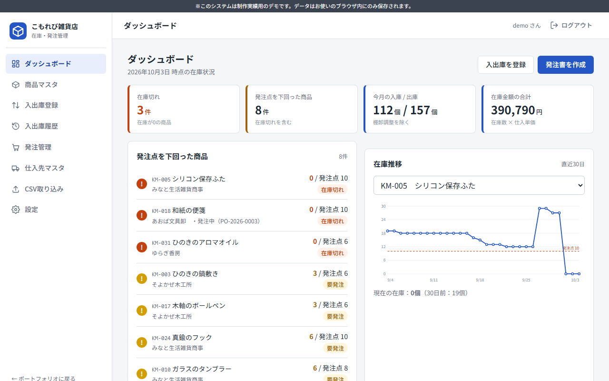

欠品と売り逃しを減らせる
発注点を下回るとすぐに警告が出るので、「気づいたら品切れ」を防げます。
※このページは制作実績用のサンプルです。実在の企業・店舗とは関係ありません。記載の数値・費用はすべて架空です。
株式会社こもれび雑貨店 御中
〜 紙とExcelの在庫管理から、3店舗の在庫が「いつでも、すぐ」わかる仕組みへ 〜
※制作実績用のサンプルです。会社名・数値・費用はすべて架空です。
01
今回のご提案のゴール：在庫の数を「その場で・全店で」正しく把握し、欠品と過剰在庫を減らすこと。あわせて、転記や集計などの手作業を減らします。
02
誰が・いつ・何をしているかを、担当者ごとの列に分けて整理しました（スイムレーン図）。
03
起きている問題を「原因」と「業務への影響」に分けて整理しました。
| 課題 | 原因 | 業務への影響 |
|---|---|---|
| ①在庫の数がすぐにわからない | 記録が紙 → Excel → メールと3段階あり、反映まで最大1週間かかる | 本部・店長が古い数字で判断している。店舗間で在庫を融通できない |
| ②欠品が起きる | 「少なくなったら発注する」基準が決まっておらず、店長の目視に頼っている | 売れ筋商品を売り逃している。お客様の取り置き・お待たせが発生 |
| ③過剰在庫が起きる | 売れ行きのデータが見られず、勘で多めに仕入れている | 倉庫が手狭になり、セールでの値引きが増えている |
| ④転記・集計に時間がかかる | 同じ内容を紙とExcelに二重に記録し、本部で手作業で集計している | 店長の残業（毎日約30分）、転記ミスによる数のずれ |
| ⑤棚卸が大変 | 全商品を数えて紙に書き、Excelの数と1つずつ照らし合わせている | 月末に2日間、通常業務が止まる |
※サンプル用の架空の内容です。数値はヒアリング結果を想定した例です。
04
記録を1か所（在庫管理システム）にまとめ、転記と集計の作業をなくします。
05
費用と効果のバランスを見て、「今回システムにする業務」と「今のやり方を続ける業務」を分けました。
用語：Must＝必ず必要／Should＝できればほしい／Could＝余裕があれば。予算や時期に合わせて範囲を調整できます。
06
システムに入れる機能を一覧にしました。要件定義（＝作る内容を決める工程）で、お客様と一緒に確定します。
| 機能名 | 概要 | 主な利用者 | 優先度 |
|---|---|---|---|
| ログイン・権限 | スタッフ・店長・本部で、使える機能を分ける | 全員 | Must |
| 商品マスタ | 商品コード・名前・仕入先・単価・発注点を登録 | 本部 | Must |
| 入出庫の登録 | 入荷・販売・破損などを記録し、在庫数を自動で更新 | 店舗スタッフ | Must |
| 発注点アラート | 在庫が発注点を下回った商品を、ダッシュボードで警告 | 店長・本部 | Must |
| 発注書の作成 | 警告が出た商品から発注書を作成（仕入先ごとに分割） | 店長 | Must |
| 入荷の記録 | 「入荷済み」にすると、発注した数が自動で入庫される | 店舗スタッフ | Must |
| 棚卸 | 実際の数を入力すると、差と原因のメモを記録 | 店舗スタッフ | Must |
| 店舗の切り替え・店舗間移動 | 3店舗の在庫を切り替えて表示し、店舗間で在庫を移す | 店長・本部 | Should |
| CSV取り込み・出力 | 今のExcelから商品を一括登録／会計ソフト用に出力 | 本部 | Should |
| 在庫推移・分析 | 商品ごとの在庫の推移や、売れ筋をグラフで表示 | 本部 | Could |
07
実際に操作できるデモを用意しました。発注点の警告、発注書の作成から入荷までの流れをお試しいただけます。

※デモは1店舗版です。任意のIDでログインできます。データはお使いのブラウザ内にのみ保存されます。
08
開発中も週1回、動く画面をお見せしながら進めるので、途中でのご要望も反映できます。
※繁忙期（12月）を避けて、11月中の本番開始を想定した例です。
09
発注点を下回るとすぐに警告が出るので、「気づいたら品切れ」を防げます。
在庫の推移を見ながら発注できるので、勘に頼った仕入れが減り、過剰在庫を抑えられます。
記録は1回だけ。店長の閉店後の転記と、本部の集計作業がなくなります。
3店舗の在庫がその場で反映されるので、店舗間で在庫を融通する判断がすぐにできます。
作業時間の試算例 ※試算例・架空
| 作業 | 現在 | 導入後（想定） |
|---|---|---|
| 台帳からExcelへの転記（3店舗） | 1日 約30分 × 3店舗 | なし |
| 本部での在庫の集計 | 週 約3時間 | なし（画面で確認） |
| 月末の棚卸 | 約2日 | 約1日 |
※ヒアリング内容を仮定した試算例です。実際の効果は、商品数や運用方法によって変わります。
10
最終的な金額は、要件定義で機能を確定したうえでお見積りします。規模により変動します。
| 工程 | 内容 | 費用の目安（税抜） |
|---|---|---|
| 要件定義・設計 | ヒアリング、業務フローの整理、画面・データの設計 | 20万〜35万円 |
| 開発 | Must・Shouldの機能の開発 | 60万〜100万円 |
| テスト | 動作確認、お客様との受け入れ確認 | 15万〜25万円 |
| 導入・操作説明 | 商品データの移行、スタッフ向け説明会（2回） | 10万〜15万円 |
| 合計 | 105万〜175万円 | |
| 運用・保守（月額） | サーバー費用、問い合わせ対応、軽微な修正 | 月1万〜3万円 |
※費用はすべてサンプル用の架空の目安です。Couldの機能を後から追加する、段階的な導入も可能です。